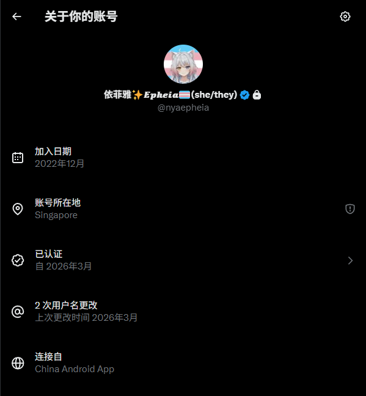

性别探索
发现自己的历程
很早以前
经常听到的说法是，很多mtf 会在小时候就幻想自己是女孩子。这基本上是刻板印象了。
我也曾在幼儿园时就幻想过自己是女孩子，穿可爱的裙子。但那时的我没有什么「质疑精神」，我总是在想「为什么男生不能穿裙子、不能扎头发」之类的。
其实我一直在心里羡慕着女孩子。
但奇怪的是，到了小学，我似乎又非常「融入」到男孩子的圈子了。
强迫自己学习那些男孩子的运动，甚至学习黄色笑话 （为什么小学生要那么喜欢讲黄段子… 好吧，可能男的在什么时候都喜欢讲黄段子）。虽然一开始觉得跟不上，但竟然「融入了」。
虽然我依然没有几个朋友，而且和那些活泼的男生依然玩不到一起，但我很怕孤独。依然尽量让自己融入。只是在心里「胡思乱想」。
我觉得只是因为自己喜欢胡思乱想。别人也会这么想吗？
初中是一个例外。
初一那半年到一年，我突然变得很「顺直男」——非常爱国爱党、支持俄罗斯、觉得男性很伟大。总之，就是很建制派。
似乎变成「真心」的顺直。
因为那时上的是一个很垃圾的初中，所以成绩很好，考了几次年级前50就飘了，觉得自己已经掌握了人生的终极真理（笑） 。
而且，我从来没有有过那么多朋友。
好像大家都和我很熟，问我问题，和我聊天，甚至和我一起跑步打篮球。虽然我技术很烂，但他们很少笑话我。
我好幸福啊。
不知道是有意识还是无意识的压抑着，就这么到了初一快结束的时候。
德育处事件
不得不说，这件事对我的影响真的非常大。
那是一个雨天。我从厕所回到教室。依然在胡思乱想着。手放在栏杆上拖着，把栏杆上的水珠变成水流。
快到教室了，门口有几个同学趴着或抓着栏杆聊天。
我想起来校规里有这么一条。大概是禁止趴在栏杆上，否则被值日生抓到了会被扣分。
我想去提醒，「维护班级的荣誉」。但不幸，我看到值日生已经来了。
我看到他们被扣了分，但这和我没什么关系，心里想着如果我早点来就能提醒了，或许班上就能少扣几分吧？于是我继续向教室后门走去
但我也被他叫住了。他说我「趴栏杆」。
我不是在抓着栏杆吗？
我想起来德育处主任说过，如果不服可以直接找到，不要和值日生直接起冲突。本着建制派特有的对领导的信任。我拉着他向德育处主任办公室走去。所幸，就在同一层。
可是到了之后，德育处主任却不耐烦地赶我出来，让我赶紧签字。我很委屈，但上课铃响了。然后他赶我去上课。
第二节课，我又来找他。他调了监控，然后说「抓栏杆也不行」。
我声情并茂地说我有多喜欢这个学校，以及栏杆的定义和雨天防滑的客观需求。但最后他说：
「那好，我给你这分撤销了，但以后我都特别关照你，你要是有违反校规的现象就加倍扣分。」
我很恐惧。不安，和绝望。
下午。雨还在下，第二节是体育课，我们在教室自习。他突然出现在门口。
「我来和你谈谈。」
到了他的办公室，他说，他和我的班主任聊了，「听说你是非常优秀的孩子，我不知道你是不是班长。但无论如何，优秀的人更要严格要求自己。」
我很认真在听，但除了给自己的扣分找合理解释以外没有听出来什么。
我表达了我的不安和担心，但他却油腻地笑了笑然后说「啊，你还真信啊」之类的。总之最后可能他觉得圆的差不多了，说「这个分给你撤销了，你回去吧」。
我讨厌这种中年男性和那种男性的发言论调（是「爹味」吗？）我是不是也会变成那样？而且我曾经对学校的美好期待也完全破灭了。
我开始思考起什么。
白纸火中燃
后来是疫情结束之前的某个事件。机缘巧合之下知道了南京传媒大学对某场大火的声援。他们真的是勇敢的人啊。
当天晚上。用百度和必应搜索，都完全没有搜索到，试图把这个结果发到QQ 空间。还导致我的空间被封了。我非常的伤心，和感到不安和恐惧——我被禁止知道这件事？
无条件的拥护建制真的是正确的吗？
这两件事给了我非常大的思考。
我去找我的朋友学会了翻墙。（虽然本来是想键政的，当时对于这个国家的制度也很失望，但我能做什么呢？），突然意识到好像哪里不太对。我所尊崇的真的是合乎逻辑的吗？
重新思考
于是，我开始质疑我的几乎一切态度，强迫自己必须根据自己的几个原则推演，于是我重新审视了我的所有态度，但这时，主要是政治和文化上的态度。自然，包括LGBTQ+。
我仔细思考：我之前为什么要反对LGBTQ+？我曾把它视作所谓「西方的阴谋」、「白左」，在最「粉红」的时候出于自己的政治立场反对。
从我的原则上来看，我找不到继续反对它的理由。
更重要的是，我在重新整理我的态度的过程中，深入了解了那些我曾经反对的概念究竟是什么。其中就包括LGBTQ+，我当时似乎有某种隐隐的触动（大概是：我似乎也是其中的一员的怀疑？）
后来我刷到了一些MtF 的帖子。当时就有一种「触动」的感觉——好像找到了什么。 不得不说给我的世界观带来了冲击，我真正认识到原来they 不仅仅是一个概念，而就是在我身边的人。那我能不能是呢？
但仅仅是这样想了一下，我对如此激进的想法还是感到恐惧。我甚至和班上另一个同学（就是他教会了我翻墙）去「炒作」药娘的概念（并非抹黑什么的，就是很神秘的炒作），甚至说我们心理剧要以这个为主题。可能是为了掩盖或者希望不只是我一个人感到冲击吧？
（那个同学为了炒作还真买了补佳乐，但他看起来不太是transgender，最多是CD，所以显然仅仅是炒作并没有怎么吃。当时我甚至想要去找他要让他给我，但想想还是放弃了）
从那之后，我再也没有觉得「当个顺直男更好」了。
但我也没有做出什么行动。我一直在「默默视奸」 MtF 社群（如你所见，我的X 账号注册的很早。）

好吧，但我觉得这真的好麻烦。再加上其实当时第二性征没有怎么发育，所以也没有什么焦虑。
我给自己定了「三年时间探索」。
探索
考上的高中是用指标生压线上的。
原来要考的高中是什么「科学高中」，是我妈说那个高中「非常个性化」。但考前临时知道他管理非常严格，基本上就是军事化，没有什么自由时间。（如果我真去了，恐怕连高一都撑不过去吧？）
于是在志愿截止前临时改了另一个，压线上了。
成绩一下子掉了下去。
分班前，曾经也有两个同学，有共同的爱好，而且都喜欢百合。加上学习压力不大，我感觉「还不错」。
但分班后的宿舍简直就是地狱。5个舍友都非常的「顺直」。他们聊的那些黄色段子、galgame男主幻想、男性优越感……我听到就烦。
我开始戴着耳机看百合番，不主动和他们说话。
那时候我就明确知道：我讨厌典型的顺直男文化和那些男性特征。自此，这段对男性社会身份和文化的厌恶最晚从德育处事件开始，最晚从这里结束，明确了下来。
虽说是「三年时间探索」，但因为性格很安于现状、怕麻烦、家里管得也比较紧（我妈虽然几乎不反对我做什么事情，但看得紧，我连网购都要她知道），所以这三年几乎没有任何实质行动。
2026年3月左右，我才真正开始和妈妈聊这个话题。
妈妈说「无论我选择什么都支持」。
这给了我很大的勇气。
被看见
我妈虽然思想上可以说相当先进，但一开始依然反对我HRT。但总之，她答应我买个裙子穿试试。
妈妈看了之后说「挺适合我的」。但我认为这完全是安慰用的谎言。
同时我更新了推特账号简介：
二次元百合厨 | 🏳️🌈🏳️⚧️LGBT友好 | 09 | MtF?MtX?探索中，总之不是顺直男 | 暂未HRT | 家长党 | Vibe coding | 搭建网站
把现实中的熟人全屏蔽了，然后把锁推关掉。 结果短短几个小时就有好几个MtF关注我。 有人还回复我的怀疑说，「也可以是非二元性别者」。
小证到HRT
3月20日 · 中大八院 · 毕波医生
妈妈陪我挂了号（按mtf.wiki推荐）。
我做了心理评估，拿到了第一份门诊病历：
- 临床诊断：性别烦闷 + 抑郁状态
妈妈虽然支持，但她「希望我多想想」，她说主要担心学校和同学关系（红岭中学走读需要医院证明，她也想保护我的隐私）。
几天后 · 北大深圳医院 · 王晓京医生
妈妈又帮我挂了王晓京的号，说想「结合两位专家的意见」。
王医生给了我「部分易性症」的诊断，并说可以拿这个去开HRT。
但他不知道深圳哪里能开药，让我自己去内分泌科“碰运气”。
但此时，我妈依然对HRT 保有怀疑态度。我说服她用了好久。
中大八院内分泌科 · 被拒
我去了中大八院内分泌科。
医生直接说：「我们整个医院都开不了，之前也有trans来过，我们也开不了。你身份证上性别是男，开不了。」
那天下午我哭了很久，眼睛和心脏都痛。
那是我第一次真正感到「被系统拒绝」的绝望。
（啊啊啊好丢人）
3月底 · 广州暨南一院 · 高绿芬医生
我决定不再碰运气，直接去广州找高绿芬医生（mtf.wiki上华南最推荐的）。
妈妈陪着我。
首先是一堆检查，各种检查都有，反正折腾了一整天。这天是2026年3月31日。
高医生真的特别好、特别专业、特别友善。
她听我说完「我可能处于MtF和MtX的中间地带——更希望是女生，但也接受偏女的状态，想先低剂量改第二性征」，就直接给我开了：
- 诺雷得 3.6mg（GnRH，醋酸戈舍瑞林）
- 雌二醇凝胶（爱斯妥） 1.25g
然后我当天就去打了第一针GnRH。这天是2026年4月1日。
那一刻我真的觉得：
我终于走到这一步了。
后来就是回诊，增加HRT 剂量。没什么可写的。
写于 2026年7月13日凌晨 HRT 第103 天